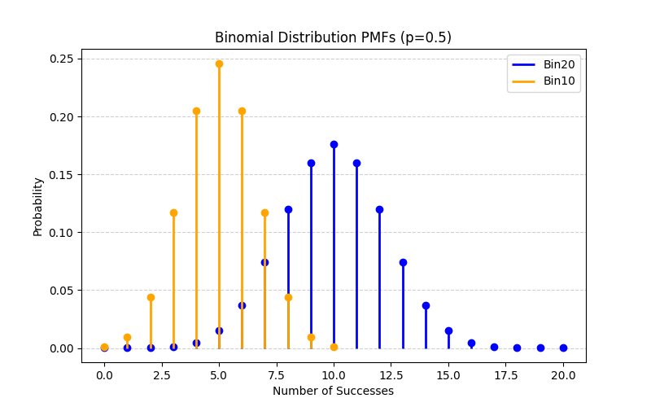
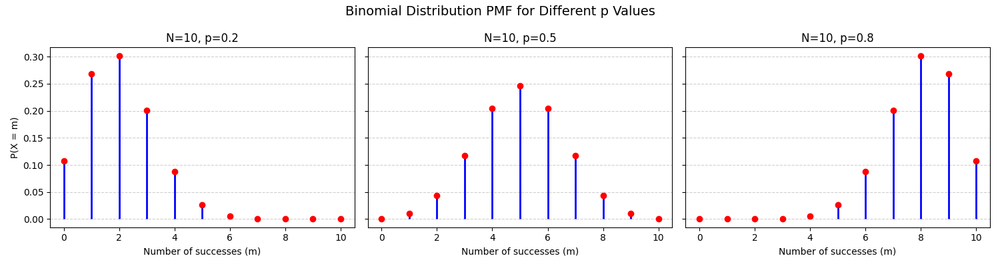
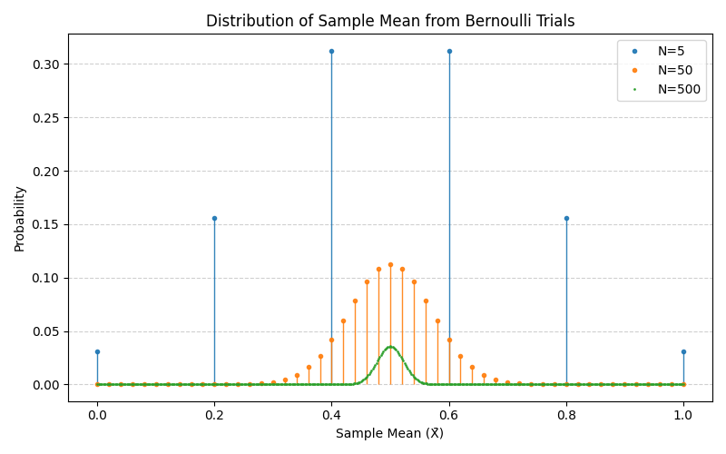
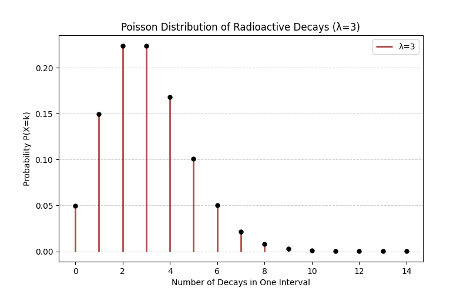

Section 1.6 Example Discrete Probability Distributions
Distributions describe how probabilities are spread across values of a random variable. We will given examples of Probability Mass Function (PMF) for the discrete random variables. We will discuss examples of Probability Density Function (PDF) for continuous random variable in the next section.
Subsection 1.6.1 Bernoulli Distribution
the outcome of each elementary event of a Bernoulli trial is either a failure or success of something 9false or true of some statement, or any myriads of two states problems, which is usually represented by a random variable \(X\) having values \(0\) and \(1\text{.}\) That is
\begin{equation}
\Omega = \{ X=0, X=1\}\tag{1.6.1}
\end{equation}
We call such random variables Bernoulli variables. The values of probability of each value of \(X\) gives us the Probability Mass Function (PMF) of the Bernoulli distribution. Suppose probability of \((X=1)\) is \(p\text{.}\) Then, probability of \((X=0)\) will be \(1-p\text{.}\)
\begin{align}
P(X=1) \amp = p\tag{1.6.2}\\
P(X=0) \amp = 1 - p \equiv q\tag{1.6.3}
\end{align}
Sometimes \(1-p \) is denote by \(q\text{,}\) with \(p+q=1\text{.}\)
The separate listing of the probability of the two values of \(X\) in Eqs. (1.6.2) and (1.6.3) can actually be written more conveniently in one formula.
\begin{equation}
P(X=x) = p^x\:(1-p)^{1-x}.\tag{1.6.4}
\end{equation}
From this formula, you will get \(P(X=1)\) and \(P(X=0)\) by substitting appropriate value of \(x\text{.}\)
For any distribution, we can find the mean of variable \(X\) by weighing each value of \(X\) with its probability.
\begin{equation}
\langle X \rangle = 0 \times P(X=0) + 1\times P(X=1) = 0 + p = p\tag{1.6.5}
\end{equation}
Similarly we can find the expectation value of any power of \(X\text{.}\) For instance, the expectation value of the \(n^\text{th}\) power of \(X\) will be
\begin{equation}
\langle X^n \rangle = 0^n \times P(X=0) + 1^n\times P(X=1) = 0 + p = p\tag{1.6.6}
\end{equation}
Thus, variance of a Bernoulli variable will be
\begin{equation}
\text{Var}(X) = \langle X^2 \rangle - (\langle X \rangle)^2 = p - (p)^2 = p(1-p).\tag{1.6.7}
\end{equation}
Therefore, the standard deviation, \(\sigma\) ,of Bernoulli variable is
\begin{equation}
\sigma = \sqrt{ \text{Var}(X) } = \sqrt{p(1-p)}.\tag{1.6.8}
\end{equation}
Subsection 1.6.2 Binomial Distribution
Imagine tossing a single coin a fixed number number of times, say \(10\) times. You might get no Heads at all or 1 Heads and 9 Tails, or 2 Heads and 8 Tails, etc. Record how many Heads you got in this trial, say you got 3 Heads. Now, toss the same coin 10 times again. This will be the second trial of experiment "tossing a particular coin 10 times". In the second trial, you might get a different number of Heads, say this time you got 8 Heads.
If you repeated the experiment above hundreds or thousands of times, you can build a table of number of trials that resulted in a total of \(0\) Heads, \(1\) Heads, \(2\) Heads, \(\cdots\text{,}\) \(10\) Heads, which are all the possibilities. This table, an example shown in Table 1.6.1 for 2000 trials, will be our Frequency Table. By dividing each of these numbers by the total number of trials you performed, you will get an estimate of probabilities of each outcome. The exact formula that gives the distribution you found is called Bernoulli distribution for the \(10\)-toss experiment.
| Total Number of Heads | Frequency | Approximate Probability |
| 0 | 8 | P(0) \approx 0.004 |
| 1 | 45 | P(1) \approx 0.0225 |
| 2 | 120 | P(2) \approx 0.06 |
| 3 | 220 | P(3) \approx 0.11 |
| 4 | 300 | P(4) \approx 0.15 |
| 5 | 350 | P(5) \approx 0.175 |
| 6 | 300 | P(6) \approx 0.15 |
| 7 | 250 | P(7) \approx 0.125 |
| 8 | 200 | P(8) \approx 0.10 |
| 9 | 150 | P(9) \approx 0.075 |
| 10 | 57 | P(10) \approx 0.0285 |
| Total Number of Trials: | 2000 |
In general, Binomial distribution gives us the probability of different number of successes in a fixed number of independent Bernoulli trials, each with the same probability of success \(p\text{.}\) In each trial of a Binomial experiments you have a sequence of \(N\) Bernoulli repeats of \(H\) (for success) and \(T\) (for failure).
\begin{equation*}
\text{One Binomial Trial: } THTTTTHHTHHHTH...H\quad \text{(a total of N symbols.)}
\end{equation*}
Suppose this sequence has \(m\) Heads (\(H\)) and \(N-m\) Tails (\(T\)). The probability of this sequence of Bernoulli outcomes will be
\begin{equation*}
p^m\,(1-p)^{N-m}.
\end{equation*}
But the \(H\) and \(T\) could have occurred in any order.To get the probability of getting a total of \(m\) Heads in any order, we multiply number of different orders in which we could have got the same total number of Heads. That turns out to be the Binomial coefficient, and hence the name Binomial distribution.
\begin{equation}
P(X = m; N, p) = \frac{N!}{m! (N-m)!}\,p^m\,(1-p)^{N-m}.\tag{1.6.9}
\end{equation}
Note that this distribution has two fixed parameters, the number of independent Bernoulli trials \(N\) in each Binomial trial and \(p\text{,}\) the probability of “success” in each Bernoulli trial. Beware of the importance of \(N\text{;}\) you can think of there being infinitely many Binomial distributions, each corresponding to different values of \(N\text{.}\) For instance, in Table Table 1.6.1, if you had conducted the experiment with \(15\) Bernoulli trials in each Binomial experiment, instead of \(10\text{,}\) you would have gotten much different probabilities for \(P(0),\ P(1), P(2), \cdots\text{.}\) This is illustrated in the following figure, Figure 1.6.2.

Following code was used to create the plot above.
import numpy as np
import matplotlib.pyplot as plt
from scipy.stats import binom
# Parameters
p = 0.5 # probability of success
N1 = 20 # number of trials for first distribution
N2 = 10 # number of trials for second distribution
# Support for each distribution
x1 = np.arange(0, N1+1)
x2 = np.arange(0, N2+1)
# PMFs
pmf1 = binom.pmf(x1, N1, p)
pmf2 = binom.pmf(x2, N2, p)
# Plot
fig, ax = plt.subplots(figsize=(8,5))
# Binomial N1
ax.vlines(x1, 0, pmf1, colors='blue', lw=2, label=f'Bin{N1}')
ax.plot(x1, pmf1, 'o', color='blue')
# Binomial N2
ax.vlines(x2, 0, pmf2, colors='orange', lw=2, label=f'Bin{N2}')
ax.plot(x2, pmf2, 'o', color='orange')
# Labels and grid
ax.set_title(f'Binomial Distribution PMFs (p={p})')
ax.set_xlabel('Number of Successes')
ax.set_ylabel('Probability')
ax.grid(axis='y', linestyle='--', alpha=0.6)
ax.legend()
plt.show()
Another way to improve your intuition about the Binomial distribution is to look at the impact of changing \(p\) value for the Bernoulli trials themselves - what impact do they have on a \(10\)-Binomial? It is shown in Figure 1.6.3. These plots show that low \(p (0.2)\) skews the PMF toward fewer successes; \(p = 0.5\) produces a symmetric distribution centered at \(N/2\text{;}\) high \(p (0.8)\) skews toward more successes.

For doing analytical calculations with the Binomial distribution, it is important to recall the following algebraic identity, called Binomial expansion.
\begin{equation}
(a + b)^N = \sum_{m=0}^{N}\, \frac{N!}{m! (N-m)!}\,a^m\,b^{N-m}.\tag{1.6.10}
\end{equation}
Using this it is straightforward to show that Binomial distribution is normalized properly since
\begin{equation*}
\sum_{m=0}^{N}\,P(X = m; N, p) = \sum_{m=0}^{N}\,\frac{N!}{m! (N-m)!}\,p^m\,(1-p)^{N-m} = \left[ p + (1-p)\right]^N = 1.
\end{equation*}
The mean of the Binomial random variable \(X\) can be obtained by weighing each value of \(X \in \{0, 1, 2, \cdots, N\} \) by the corresponding probability.
\begin{equation}
\langle X \rangle = \sum_{m=0}^{N}\, m \, P(X = m; N, p) = N\,p.\tag{1.6.11}
\end{equation}
A simple method of showing the result involves taking an appropriate derivative appropriately.
\begin{align*}
\sum_{m=0}^{N}\,m\,\frac{N!}{m! (N-m)!}\,p^m\,(1-p)^{N-m} \amp = \left[ p\frac{d}{dp}\sum_{m=0}^{N}\,\frac{N!}{m! (N-m)!}\,p^m\,q^{N-m} \right]_{q=1-p}\\
\amp = \left[ p\frac{d}{dp}(p + q)^N \right]_{q=1-p} \\
\amp = \left[p N(p + q)^{N-1} \right]_{q=1-p} = N\, p.
\end{align*}
The variance is similarly shown to be
\begin{equation}
\text{Var}(X) = \langle X^2 \rangle - \langle X \rangle ^2 = N\,p\,(1-p).\tag{1.6.12}
\end{equation}
And, the standard deviation \(\sigma\) is just the square root.
\begin{equation}
\sigma = \sqrt{\text{Var}(X) } = \sqrt{N\,p\,(1-p)}.\tag{1.6.13}
\end{equation}
Binomial distribution plays important role in understanding average of several Bernoulli random variables, say \(N\text{,}\) which have the same \(p\text{.}\) Suppose, we denote \(N\) Bernoulli variables by \(X_1,\ X_2, \ \cdots\ , X_N\text{.}\) Then, their sum will be a Binomial random variable, if Bernoulli random variables take \(0\) or \(1\) as awe have discussed above.
\begin{equation*}
X_\text{sum} = X_1 + X_2 + \cdots + X_N.
\end{equation*}
The average will be a scaled Binomial variable. We will denote this random variable by \(\bar{X}_N\) with a bar above the symbol and a reminder that it is average of \(N\) Bernoulli variables.
\begin{equation*}
\bar{X}_N = \frac{X_\text{sum}}{N} = \frac{X_1 + X_2 + \cdots + X_N}{N}.
\end{equation*}
This random variable is called sample mean. It will take the following values:
\begin{equation*}
\bar{X}_N \in \{ 0, \frac{1}{N}, \frac{2}{N}, \cdots, \frac{N}{N}=1 \}
\end{equation*}
With \(p\) being probability of any of the individual Bernoulli variables to produce a success, i.e., \(p = P(X_i = 1)\) for every one of the \(i = 1, 2, \cdots, N\text{.}\)
\begin{equation*}
\langle \bar{X}_N \rangle = p,\qquad \text{independent of } N.
\end{equation*}
But the variance is quite interesting
\begin{equation*}
\text{Var}(\bar{X}_N) = \frac{p(1-p)}{N},
\end{equation*}
which translates to the standard deviation
\begin{equation*}
\sigma = \sqrt{ \text{Var}(\bar{X}_N) } = \frac{\sqrt{p(1-p)}}{\sqrt{N}}.
\end{equation*}
Where does this matter?
-
Interpretation: If you run multiple experiments, your average success rate will be centered at \(p\) and become more concentrated as \(N\) grows since the standard deviation drops as \(\sim 1/\sqrt{N}\text{.}\) This is illustrated in Figure 1.6.4.
-
Connection to the Central Limit Theorem: For large \(N\text{,}\) it can be shown that the probability distribution of the random variable \(\bar{X}_N\) tends to become Gaussian with the mean \(p\) and variance \(p(1-p)/N\text{.}\) We write this as\begin{equation*} \bar{X}_N \approx \text{Gaussian}\left( p, \frac{p(1-p)}{N}\right), \end{equation*}even though each \(X_i\) is a discrete random variable. This goes by the name Central Limit Theorem.

Subsection 1.6.3 Poisson Distribution
The Poisson distribution models the number of times an event occurs in a fixed interval of time or space, given that:
-
Events occur independently.
-
Events happen at a constant average rate, usually denoted by Greek letter lambda \(\lambda\text{.}\)
-
Two events cannot occur at the exact same instant. That means we are usually interested in events that are rare within the interval we choose to work with so that it can be safely assumed that two events do not coincide.
A Poisson random variable \(X\) can take any non-negative integer values since it’s just a count. The probability mass function for a Poisson random variable will give probabilities for \(X = k\) for each non-negative value \(k\) for a constant average rate \(\lambda\) is given by
\begin{equation}
P(X = k) = e^{-\lambda}\, \frac{\lambda^{k}}{k!}.\tag{1.6.14}
\end{equation}
It is obviously normalized since
\begin{equation*}
e^{\lambda} = \sum_{k=0}^\infty\, \frac{\lambda^{k}}{k!}
\end{equation*}
Therefore
\begin{equation*}
\sum_{k=0}^\infty\, P(X = k) = e^{-\lambda}\times e^\lambda = 1.
\end{equation*}
The mean of Poisson distribution is the average count, \lambda.
\begin{equation}
\langle X \rangle = \sum_{k=0}^\infty\, k\, P(X = k) = \lambda,\tag{1.6.15}
\end{equation}
as we can show by the following calculations.
\begin{align*}
\langle X \rangle \amp = \sum_{k=0}^\infty\, k\, P(X = k) = e^{-\lambda}\sum_{k=0}^\infty\, k\, \frac{\lambda^{k}}{k!} \\
\amp = e^{-\lambda}\, \left( \lambda\,\frac{d}{d\lambda} \right)\sum_{k=0}^\infty\, \frac{\lambda^{k}}{k!} = e^{-\lambda}\, \left( \lambda\,\frac{d}{d\lambda} \right)\, e^\lambda = \lambda.
\end{align*}
The variance of Poisson distribution is similarly shown to be also \(\lambda\text{.}\)
\begin{align*}
\text{Var}(X) \amp = \langle X^2 \rangle - \langle X \rangle^2\\
\amp = (\lambda + \lambda^2) - \lambda^2 = \lambda.
\end{align*}
where the missing steps are left for the student to practice, using the same type of argument as introducing \(\lambda\,(d/d\lambda)\) operators appropriately.
A mathematically interesting result is that in an appropriate limit, a Binomial distribution can be shown to become same as Poisson distribution. I will just state the result without giving you the detailed calculations. (hint: You can get \(k\) factors of \(N\) from \(N!/(N-k)!\)).
\begin{equation*}
\frac{N!}{k! (N-k)!}\, p^k\, (1-p)^{N-k} \xrightarrow{N\rightarrow \infty,\ p\rightarrow 0,\ Np=\lambda, \text{fixed}} e^{-\lambda}\,\frac{\lambda^k}{k!}
\end{equation*}
Example Radioactivity is one of the classic and most intuitive real-life examples of the Poisson distribution. Let’s look at it a little closely. Radioactive decay is a random process. Each atom has a constant probability of decaying in a fixed time interval. The decays are:
-
Independent (one decay does not affect another).
-
Rare events relative to the huge number of atoms.
-
Occurring with a constant average rate.
These aspects make the Poisson distribution a perfect model for studying the statistics of radioactivity.
Suppose we measure the number of particles emitted from a radioactive source in 10-second intervals. From past experiments, we know that the detector records on average 3 decays per 10 seconds. So, per second, we expect on-average \(0.3\) decays.
\begin{equation*}
\lambda = 0.3.\ \ \text{(per second)}
\end{equation*}
That completely specifies the Poisson distribution. Therefore, we can immediately calculate all sorts of things for the phenomenon. For instance, probability of seeing exactly \(0\) decays in \(1\) seconds will be
\begin{equation*}
P(X=0) = e^{-\lambda}\,\frac{\lambda^0}{0!} = e^{-0.3} \approx 0.7408.
\end{equation*}
Probability of exactly 3 decays in a second will be
\begin{equation*}
P(X=0) = e^{-\lambda}\,\frac{\lambda^3}{3!} = e^{-0.3}\times \frac{0.3^3}{3!} \approx 0.0033.
\end{equation*}
Now, for a trick question. What will be the probability of 10 decays in one minute? Well, we will convert our lambda per second to a new lambda per minute. Let’s label lambda’s by the intervals they refer to.
\begin{equation*}
\lambda_{60} = 60 * \lambda_{1} = 60 \times 0.3 = 18.
\end{equation*}
Then
\begin{equation*}
P_{60}(X=10) = e^{-\lambda_{60}}\, \frac{\lambda^{10}}{10!} \approx 0.014.
\end{equation*}
A visual representation of the PMF often helps to build intuition. A simple program in Python can be used to to do that. The plot with \(\lambda = 3\) is shown in Figure 1.6.5.
import numpy as np
import matplotlib.pyplot as plt
from scipy.stats import poisson
# Average decay rate
lam = 3
# Range of possible counts
x = np.arange(0, 15)
pmf = poisson.pmf(x, lam)
plt.figure(figsize=(8,5))
plt.vlines(x, 0, pmf, colors='darkred', lw=2, alpha=0.7, label=f'λ={lam}')
plt.plot(x, pmf, 'o', color='black', markersize=5)
plt.xlabel('Number of Decays in One Interval')
plt.ylabel('Probability P(X=k)')
plt.title('Poisson Distribution of Radioactive Decays (λ=3)')
plt.grid(axis='y', linestyle='--', alpha=0.6)
plt.legend()
plt.show()

Subsubsection 1.6.3.1 Poisson Process
A Poisson process is a stochastic process used to model the occurrence of events that happen independently and at a constant average rate over time or space.
Formally, a Poisson process is a counting process \(( \{N(t), t \ge 0\} )\text{,}\) where \(N(t)\) represents the number of events that have occurred up to time \(t\text{,}\) and it satisfies the following properties:
-
Initial Condition: \(( N(0) = 0 )\text{,}\) meaning the process starts with no events at time zero.
-
Independent Increments: The number of events in non-overlapping time intervals is independent. For example, the number of events in \((t_1, t_2]\) is independent of the number in \((t_3, t_4]\) if the intervals do not overlap.
-
Stationary Increments: The number of events in a time interval of length \(t \text{,}\) i.e., \(N(s+t) - N(s) \text{,}\) depends only on the length \(t \) and not on the starting point \(s \text{.}\)
-
Poisson Distribution: The number of events in any interval of length \(t \) follows a Poisson distribution with mean \(\lambda t \text{,}\) where \(\lambda > 0 \) is the rate parameter (average number of events per unit time). The probability of \(k \) events in an interval of length \(t \) is:\begin{equation*} P(N(t) = k) = \frac{(\lambda t)^k e^{-\lambda t}}{k!}, \quad k = 0, 1, 2, \dots \end{equation*}
-
No Simultaneous Events: The probability of two or more events occurring at exactly the same time is negligible (technically, the probability of multiple events in an infinitesimally small interval is zero).
Examples:
-
Queueing Systems: Customers arriving at a store at an average rate of \(\lambda = 5 \) customers per hour.
-
Telecommunications: Phone calls arriving at a call center with a constant average rate.
-
Reliability: Failures of a machine occurring randomly at an average rate of \(\lambda = 0.01 \) failures per hour.
-
Traffic: Cars passing a checkpoint on a highway at a constant average rate.